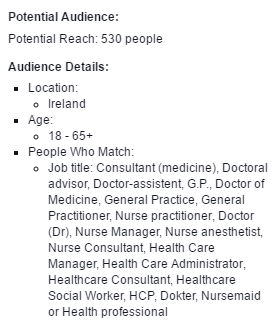
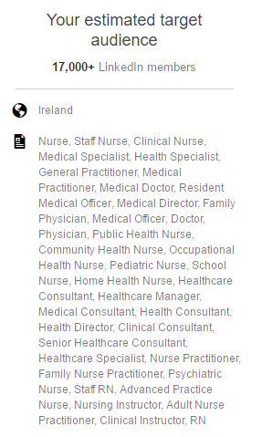

Most of the people who surf the web and are naturally exposed to online advertising, sooner or later ask themselves: “How do they know?”. How do they know I like sunbeds and pancakes, how do they know I am travelling to Africa next month, how do they know I just liked that page, how do they know I visited that website….?
Well, they know. More precisely, advertising platforms know. As puzzling as this may seem, these technologies make sure that users see ads that may be relevant to them and advertisers don’t waste their money showing make-up banners to bearded Irish men.
most advertising platforms nowadays have extremely sophisticated and diversified ways to target their users, based on the information provided by the users themselves. The data users provide depends on the platform. This is why we work very closely with our clients to make sure that the target audience for their campaigns, as well as their goals and KPIs, are well-defined from a planning phase, because from that decision we will determine the best available channels to use.
This argument applies to all clients, including pharma companies and healthcare organizations. We often find that many clients are not aware of the targeting capabilities of digital marketing. You can compare traditional marketing to digital marketing as your healthcare advertisement appearing in a big square as opposed to your ad appearing in a doctor’s waiting room. Finding your audience online is challenging, particularly in the case of pharma and healthcare. Restrictions due to internal regulations and advertising policies can make this task even harder. Nonetheless, through a combination of digital channels, it is possible to reach many audience categories with minimum waste of ad impressions.
So, one would be surprised how Facebook turned out to be one of the best performing channels for GSK’s More than Once a Night Campaign, an awareness campaign about Benign Prostatic Hypoplasia or BPH, where the main target audience was senior Irish males over 55. Through an initial research we found that there are over 100,000 males over 55 active on Facebook in Ireland. The platform attained an impressive goal conversion rate, exceeded only by organic traffic to the website and few other referral sources of traffic – goals for the campaign included video views, PDF downloads and self-assessment quiz completed on the website. Combined with channels such as medical publications, Google Search and Display Ads, the Irish Times Business Digest, Golfnet.ie and Video Platforms the online campaign achieved impressive results.
However, you may wonder if the same results can be reached when the audience is smaller, harder to find online, or when it belongs to a specific category. Nurses and healthcare professionals are two examples of categories that can be harder to engage online. Most pharma companies are aware that there are a number of online medical publications that can be used to reach HCPs through banners ads, sponsored emails, promoted content etc. However, many would not consider that quite often, HCPs are active on other channels like Google or Social Media. Also, it is useful to know that – once you have obtained clients’ consent to be contacted for marketing purposes –email lists can be used to target people who belong to these lists on most channels, provided that they have an account with those channels. Ads can be customized specifically for these users, as they will be displayed only to them.
Nurses and healthcare professionals are two examples of categories that can be harder to engage online. Most pharma companies are aware that there are a number of online medical publications that can be used to reach HCPs through banners ads, sponsored emails, promoted content etc. However, many would not consider that quite often, HCPs are active on other channels like Google or Social Media. Also, it is useful to know that – once you have obtained clients’ consent to be contacted for marketing purposes –email lists can be used to target people who belong to these lists on most channels, provided that they have an account with those channels. Ads can be customized specifically for these users, as they will be displayed only to them.
Every channel has its own pharma advertising policy, and this is often very strict, but it would be a shame to ignore that your ads could be shown to almost 20,000 people in Ireland who have “Nurse”, “Medical Practitioner”, “Doctor”, “Physician” etc. (see Image 2) as a job title in their LinkedIn profiles; or to the almost 40,000 people on LinkedIn who work in the Hospital and Healthcare industry; that you can reach the 2500+ people who have the keywords “nurse” (1445) or “doctor” (840) or “GP” (266) on their Twitter bios in Ireland; that ads can appear on the timelines of Facebook users whose job descriptions include keywords like “doctor”, “nurse”, “general practitioner” etc. (see Img 1); many may not be aware that there are hundreds of monthly searches on Google Ireland for terms like “psoriasis” (6600), “asthma” (2400), “medical education” (30), “diabetes mellitus” (480) or “travel vaccines” (70) and that your ads can be at the top of Google’s first page to provide useful information every time a user searches a specific keyword.
It would be a shame – once you have gone through compliance regulations, legal and medical approval, policy details – not to try to reach your audience online if you know that it can be done.